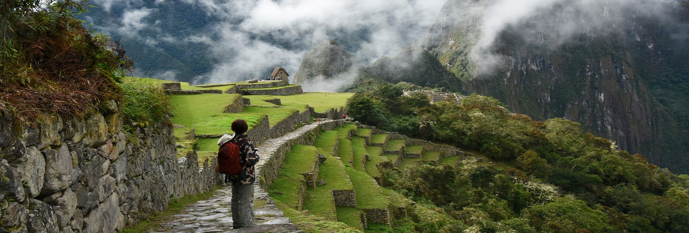

Full Day
Cusco
5 - 10 people
Easy
The Classic Inca Trail 4 days to Machu Picchu, is one of Peru´s most famous treks, also best-known and most popular hiking trail in South America perhaps the world. Visited by thousands of tourists every year, the Inca trail follows the original paved Inca pathways, and it is one of the biggest highlights of your trip to Peru. The Inca trail 4 days trekking offer you a range of spectacular archeological sites along the way.
The amazing view of rivers and snow-capped mountains. The Classic Inca Trail 4 days trek has 45 km of distance and spans through altitudes in the valley from (2,700 m/ 8,858 ft.) to mountain passes of (4215 m/ 13,828ft.). Continuing through the cloud forest toward the Sun Gate to arrive to the sacred city of Machu Picchu itself.
Day 1: Cusco – Ollantaytambo – KM 82 – Ayapata
Our trekking guide will pass to pick you up from your hotel at 4:30 am (exact time will be confirmed in the briefing time), and then we will ride by van to the KM 82 which is the beginning of the Inca Trail. Along the way, we will stop at Raqchi view pint to take pictures. This beautiful location overlooks the valley of Urubamba with the snow-capped mountain range of Vilcanota in the background.
From the same spot, you can also see Mount Veronica (5,860 m/ 19,225ft.) and the Urubamba river “Wilcamayu”. After, we continue driving for 1hr to reach the town of Ollantaytambo where we stop to get a breakfast and buy any last minutes supplies before arriving at the trailhead of the Inca trail. After breakfast, we will then continue in the transportation for 45 minutes to Km 82.
Upon your arrival to Km 82, you will have a free time to organize and pack your last staff, use the bathroom, applying sunscreen, insect repellent and check everything before to begin the hiking. At the checkpoint of the Inca Trail, everyone will have to show the original passport and ISIC Card (if applicable).
The Inca Trail begins at altitude (2,720 m/ 8923 ft.) and the 2.5hr of hiking is relatively flat terrain until we reach the first Inca ruins, known Willcaracay and the beautiful archeological site of Llactapata or Patallacta (upper town in ancient language), which was a checkpoint on the Inca trail approach to Machu Picchu.
After over the history, we back on the trail to continue hiking for 2 hours to Hatunchaca (2,598 m/ 8,525 ft.) which is the lunch spot. Along the way, we will be surrounded by the pure nature and amazing views of the Urubamba mountain range and the beautiful snow-capped peak of Wakaywillca (5,860 m/ 19,225ft.)
After lunch, we will continue hiking up for 2.5 hr to reach the first campsite, known Ayapata (3,300 m/ 10,829 ft.).
Once we get to the campsite the staff of Peru Spirit Adventure will welcome you to your camp and show you to your tent. Then you will have time to take rest and dress with a warm jacket before happy hour. After we will have a happy hour with hot chocolate, milk, coffee, a variety of tea and followed by dinner, and briefing for the second day.
Day 2: Ayapata – Dead Woman’s Pass – Pacaymayu – Chaquicocha
After waking up early and delicious breakfast, we will start our hike up following the ancient path towards the famous Dead Woman´s Pass!
The first two hours, we will hike up through the cloud forest to Llulluchapampa (3,800 m/ 12,460 ft.), which is a small camp and last place to buy supplies. After a short break, we will continue our hiking another two hours to the highest pass of the Inca trail, Known in Quechua Abra Warmi wañusca or Dead Women´s Pass in English (4,215 m/ 13,825 ft.). At the highest point normally many hikers reach this altitude and this is the best award for celebrating. Besides, we will admire the majesty of the highest pass of the Inca Trail.
Afterwards, we will start to descend to the Pacaymayu camp for lunch. After Lunch, we continue to ascend 1 hr to the Inca site of Runkuracay (pile of ruins) this is a circular complex is located on the top of the mountain. After guiding tour of the Runkuracay, we follow the trail leads us to the second highest point of the Inca Trail, Called Runkuracay´s Pass (3,950 m/ 12,959 ft.). Along the way, we will have spectacular views of the snow-capped mountain range of Urubamba and Vilcabamba in a distance. Also a beautiful lagoon.
Afterward, we descend towards the next Inca ruin as known Sayaqmarca “Dominant town or inaccessible town” (3,650 m/ 12,000 ft.). At the place, we will have a chance to observe one of the most amazing sunsets over the Vilcabamba mountain range and Aobamba valley! After Sayaqmarca Inca ruins, we hike down for 30 minutes through the jungle with orchids and bromeliads to our campsite for the night at Chaquicocha (3,600 m/ 11,800ft.).
We choose this campsite because it is less crowded and will allow us a more peaceful encounter with nature! If the weather allows, you will get to enjoy the blue sky and see the Inca constellation, eventually, we will go to take a rest and have sweet dreams in the quiet spot.
Day 3: Chaquicocha – Phuyupatamarka – Wiñay Wayna
This day is the most impressive day with many views of the Vilcabamba mountain range and the sacred mountain of Salkantay. After waking up with a steamy cup of coca tea followed breakfast, we begin to hike for two hours until we reach Phuyupatamarca (3,680 m/ 12,073ft.).
On the way, we will pass through the tunnel and hike way above Urubamba valley with stunning views of peaks of Salkantay, Veronica, and Pumasillo that spread out on either side of the trail. From Phuyutamaraca archeological site, we head into the rainforest! Where we will hike downhill for 3 hr through steep staircase towards our third campsite, known Wiñay Wayna (forever young).
But before to get to the lunch place we stop at Intipata archeological site that is on an elevated perch overlooking the Urubamba rive! To take a rest and take some pictures. Then, we continue hiking down for 30 minutes to reach the lunch spot and stay there.
Following lunch, we will have time to take rest and then go to explore the archeological site of Wiñaywayna where we receive a comprehensive guided tour of your trekking guide. Later on, you will enjoy the afternoon tea followed by the last dinner prepared by your chef of the tour. Eventually, we go to sleep because the next day is the big day for everyone.
Day 4: Wiñay Wayna – Sun Gate – Machu Picchu – Cusco
After early wake-up and breakfast, we wait at the checkpoint to be one of the first to begin to hike when they open the gate at 5:30 am. We will complete the final stretch of the Inca trail for 2hr until Machu Picchu. After passing the last checkpoint of the Inca trail, we hike about 1hr through fairly easy going trail and cloud forest to reach the Inti Punku (Sun Gate).
From where we can see the sunrise over the Inca citadel of Machu Picchu and the Andes. Then we hike down for 1 hr to approach Machu Picchu. Along the way down, the views of the Inca city just get better and better. Upon your arrival, you will have a free time to take pictures of the Machu Picchu! Before overcrowding.
At 8 am we´ll reach the final checkpoint and enter Machu Picchu to start the guiding private tour for 2 hr. After guiding tour, you will have a free time to explore the Machu Picchu ruin on your own or climb the Huayna Picchu Mountain (must be arranged in advance the Huayna Picchu ticket).
When you are finished exploring the Machu Picchu Inca citadel you will catch a shuttle bus to Aguas Calientes for 30 minutes to enjoy your lunch (Not Included). Later on, you will take a train from Aguas Calientes to Ollantaytambo where our private van will be waiting for you to transfer you back to your hotel in Cusco. Our Classic Inca Trail 4 days Trek to Machu Picchu will end at your hotel.